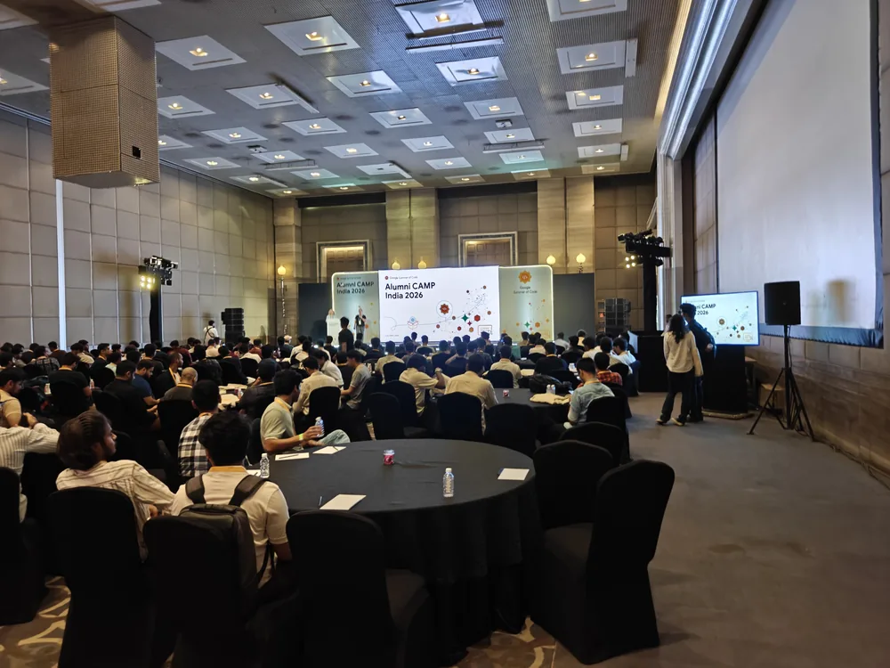
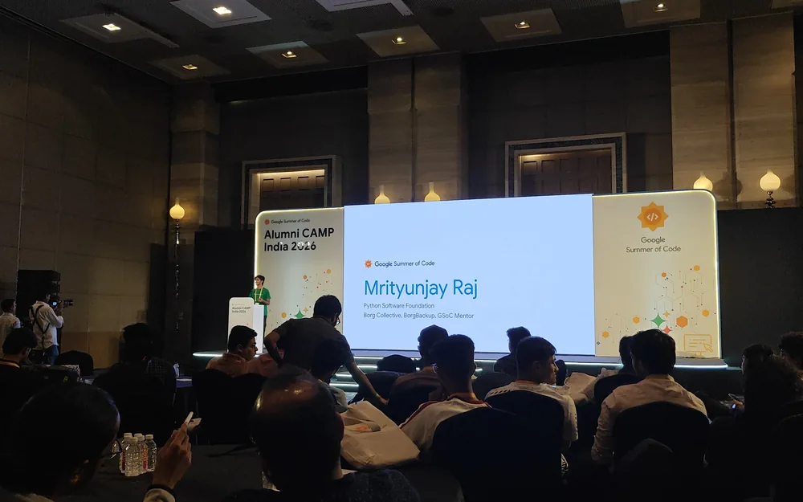
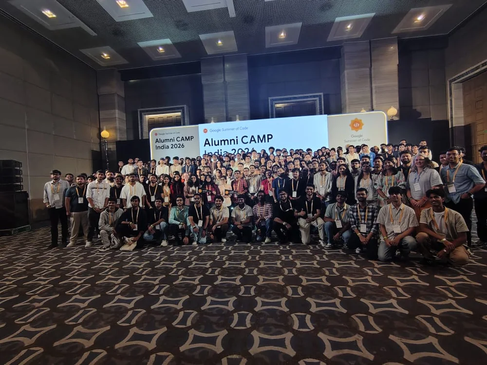
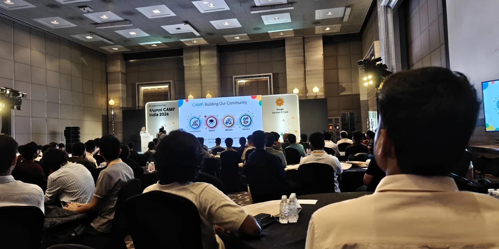

Organization search
Filter by 30+ languages across 15+ domains with smart tagging.
PythonRustGo+28
184 organisations from the 2026 cycle, indexed with their stacks, mentors and issue queues. The 2027 list lands in February, use this to be ready the day it does.
Filter by 30+ languages across 15+ domains with smart tagging.
GitHub username or CV → instant ranked org recommendations.
Refreshed daily · beginner-friendly, ready to claim.
A global, online initiative by Google that connects new contributors with open source organizations for a paid, mentored summer coding project.
GSoC gives university students and independent developers the chance to spend a summer writing production-grade code for established open source projects - under the direct guidance of experienced mentors, while earning a Google-sponsored stipend.

Work on a structured, multi-week project over summer. Successful participants receive a stipend scaled to their country.
Partner with experienced developers from organizations like Python, the Linux Foundation, CNCF and Apache.
Write production code, ship pull requests, master Git workflows, and build a portfolio that stands out.
Discover the right programme, reach the mentors, and plan the summer, in one workspace.
Search and filter all 184+ organizations by participation history, codebase complexity, competition level and tech-stack tags.

Connect your GitHub account or upload a profile. The matcher ranks organizations by your actual stack.
No manual searching. Beginner-friendly issues from active repositories, refreshed daily by the project's own workflow.
Direct links to each organization's Slack, Discord, IRC and Zulip communities, the rooms where decisions happen.
Select up to three organizations and compare years active, contributors, languages and open issues.
Draft the proposal in-app with live preview, auto-saved drafts, and one-click PDF or Markdown export.
Fully cached with service workers. Search, filter, read guides and edit drafts with no connection at all.
From a blank page to a shortlist you can defend in an application.
Paste your GitHub handle or CV text. The matcher extracts your languages and topics, then scores every org in the index against them.
Filter by language, domain, competition and beginner-friendliness, bookmark the ones that fit, and line up to three side by side.
Claim a good first issue from the org's live queue, then write the proposal in the built-in editor and export it.
Most tools give you a list. This gives you a way to discover, compare and apply.
| Feature | FindMyGSoC | GSoC portal | gsocorganizations.dev | GitHub, by hand |
|---|
| Feature | FindMyGSoC | GSoC portal |
|---|
Paste your GitHub or CV and get organizations scored by skill overlap, no manual browsing.
Everything runs in your browser. Proposals, bookmarks and history never leave your device.
No account, no paywall. Open the app and start exploring 184 organizations in under five seconds.
Built in the open on GitHub. Add features, report issues, or fork and self-host it.
Google Summer of Code is a career-defining programme, but the first phase, finding the right organization, understanding its codebase, filtering by the stack you actually know, can feel like a needle in a haystack.
FindMyGSoC is an independent community dashboard built to close that gap: automated data aggregation, a privacy-first workspace, and a shortlist you can defend in an application.


Short answers to the things people ask before their first contribution.
Browse 184+ organizations, or paste your GitHub username and let the matcher rank them.